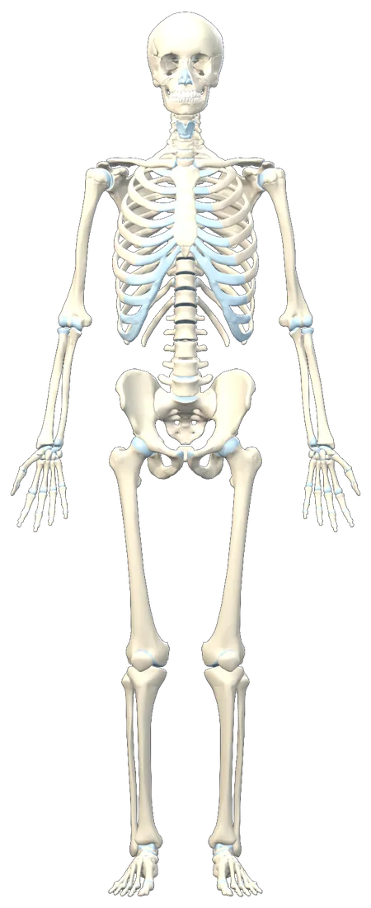
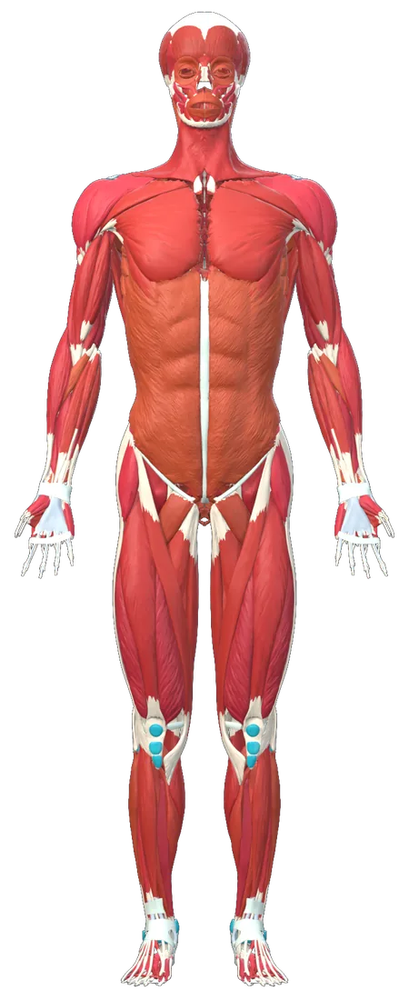
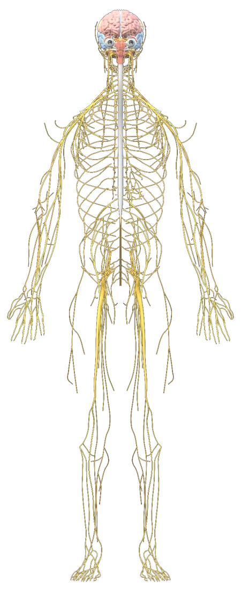
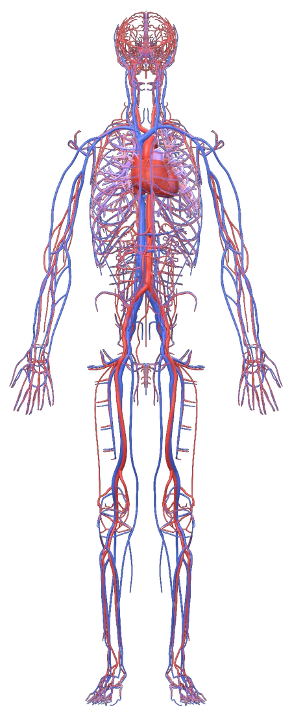
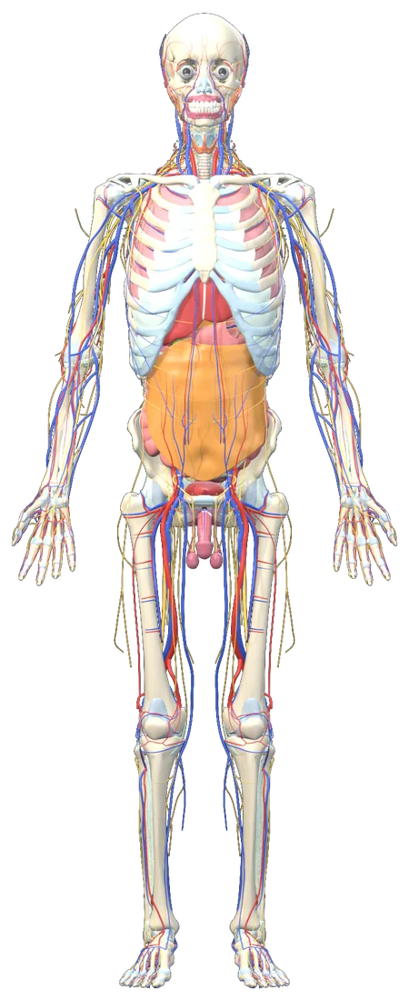

Drag to rotate · scroll to zoom · right-drag to pan · click a structure · Ctrl+click to add more
Anatomy Atlas · Visualize To Learn
See the body,
layer by layer.
An interactive 3D atlas of the human body. Rotate it, peel back the systems, cut cross-sections, follow guided lessons — and ask an AI anatomy tutor whenever something doesn't click.
Loading the 3D model…
- 3,900+
- structures
- 9
- body systems
- 1,100+
- bony landmarks
- 6
- guided lessons





- Explore in 3DIsolate, ghost and section any structure.
- Learn step by stepShoulder, knee, heart, cranial nerves…
- Test yourselfQuizzes, spaced review, exam mode.
- Ask the tutorExplanations linked to the model.